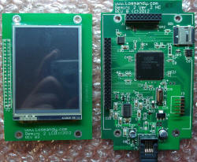
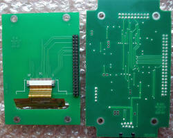

Inside of HC Ver. 2
Top of both boards
Bottom of both boards
| Pictures of the New Hand Controller version internals |
|
Inside of HC Ver. 2 |

Top of both boards |

Bottom of both boards |
| Click on the above images to see larger views |